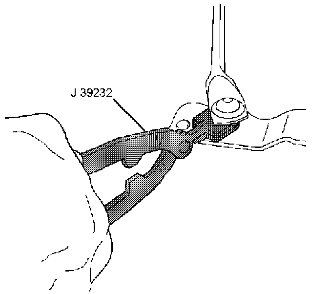
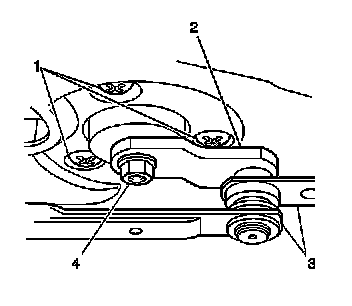
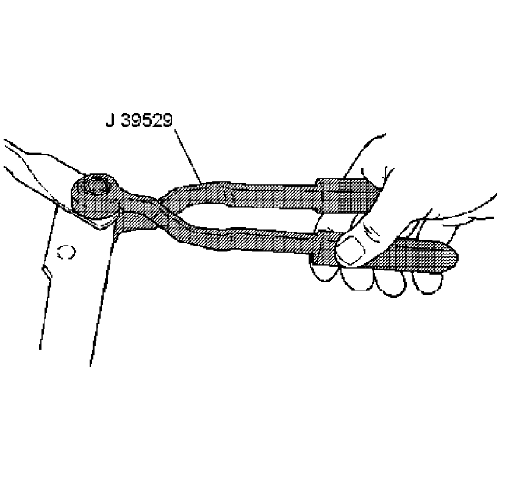

Windshield Wiper Motor Replacement
Windshield Wiper Motor Replacement
Tools Required
* J 39232 Wiper Linkage Separator
* J 39529 Wiper Linkage Installer
Removal Procedure

1. Remove the wiper motor module assembly (1). Refer to Windshield Wiper System Module Replacement (Windshield Wiper System Module Replacement) .

2. Remove the drive links from the wiper motor crank arm to the wiper motor using the J 39232 .

3. Remove the 3 screws (1) retaining the wiper motor to the wiper motor module.
4. Remove the wiper motor.
Installation Procedure
Notice: Refer to Fastener Notice (Fastener Notice) .
1. Install the wiper motor onto the wiper motor module assembly with the screws (1).
Tighten the screws to 10 N.m (89 lb in).

2. Install the drive links onto the wiper motor crank arm using the J 39529 .
3. Install the wiper motor module assembly (1). Refer to Windshield Wiper System Module Replacement (Windshield Wiper System Module Replacement) .
4. Operate the wipers and check for proper operation.